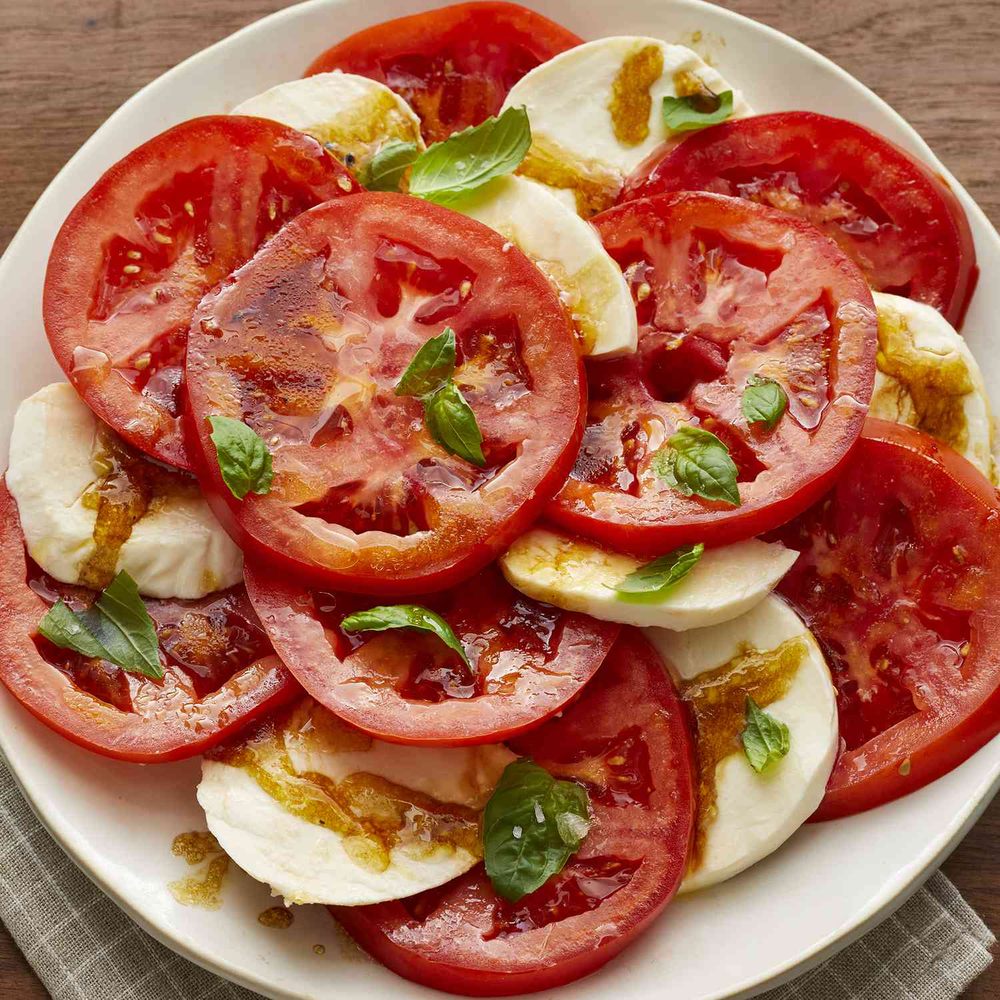

Tomato Salad

Description
Tomato and mozzarella salad with fresh basil... There's nothing better
than a caprese salad, especially in the summer if you can get tomatoes
and basil from your garden.
Ingredients
- 3 large tomatoes, sliced
- 8 ounces fresh mozzarella cheese, sliced
- ¼ cup olive oil
- ¼ cup balsamic vinegar
- ¼ teaspoon salt
- ⅛ teaspoon ground black pepper
- ¼ cup minced fresh basil
Directions
- Place tomato slices, alternating with mozzarella
slices, on a large serving platter.
- Combine oil, balsamic vinegar, salt, and pepper
in a jar with a tight-fitting lid; shake well.
- Drizzle over tomatoes and mozzarella; sprinkle with basil.
- Enjoy!